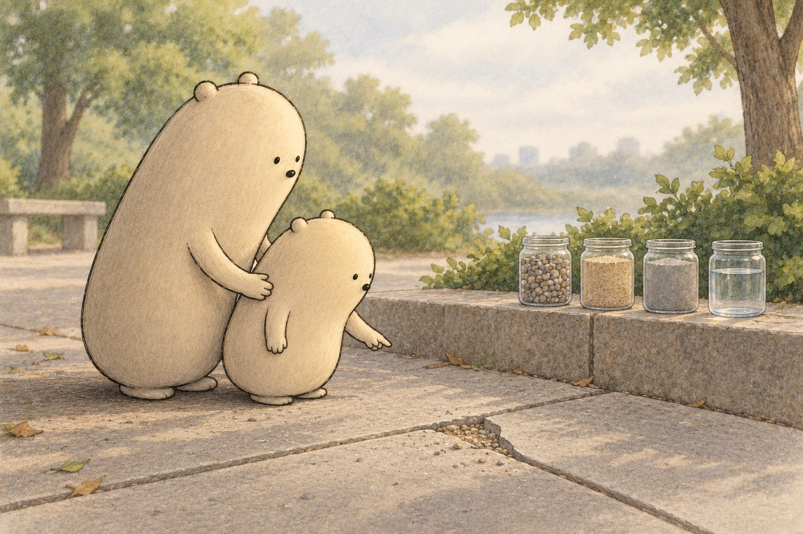
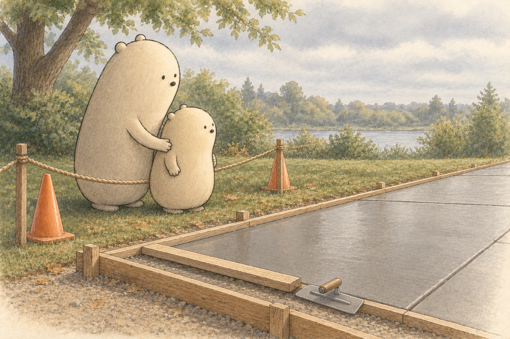
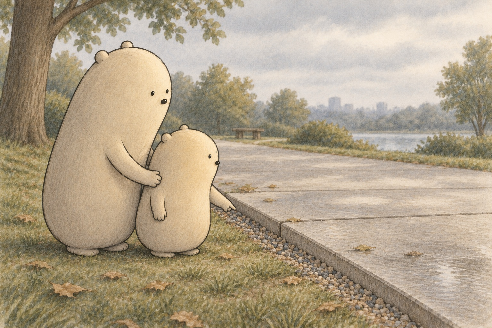
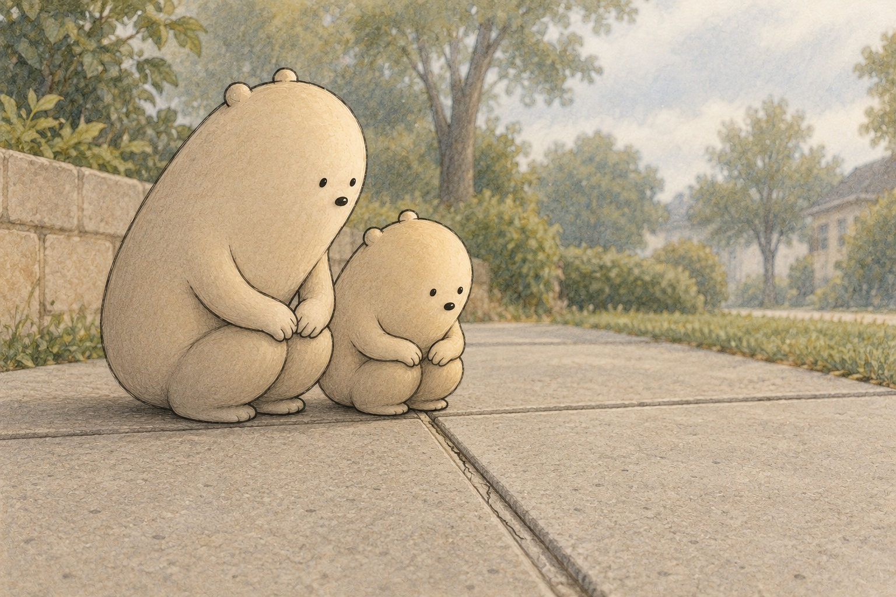

How is a sidewalk made from powder, water, sand and stones, and why does it have grooves?

Where shall we look?
Concrete is gravel, sand, cement and water.
What is a sidewalk made of?
Find the tiny stones and sandy specks on the chipped corner, then look at the four sealed jars beside it.
A little explanation & something to try
A sidewalk is made of concrete, and concrete is a mix of four things: gravel, sand, cement and water. Cement is a fine gray powder. It is only a small part of the mix, roughly one part in eight, and when it meets water it makes a paste that coats the sand and stones.
Try this. Look closely at a sidewalk square outside, or at a photo of one. Find tiny stones, speckles and a groove. Draw one square on paper and mark where the groove runs.

Wet concrete fills a wooden form and then hardens by a chemical reaction.
How does wet concrete turn hard?
Find the smooth wet slab inside its wooden frame, and the rope and cones that keep everyone back.
A little explanation & something to try
Wet concrete is poured into a wooden frame called a form, spread flat and smoothed. Then the cement and water begin a chemical reaction that links everything together. It hardens by that reaction, not just by drying out, which is why concrete can even harden under water.
Try this. Stir two spoonfuls of flour with a little water in a paper cup to make a thick paste. Stir in a handful of dry rice so the paste coats every grain. Leave the cup for a day, then tap it and feel how hard it got. Flour paste only dries out, but real concrete hardens by a chemical reaction.

Concrete is strong when squeezed, and packed gravel helps support the slab evenly.
Why is a sidewalk strong, and what holds it up?
Look at the edge of the path, where a thin layer of packed gravel sits under the slab.
A little explanation & something to try
Concrete is very strong when it is squeezed, like when feet and bike wheels press down on it. It is weaker when it bends or stretches. A layer of packed gravel under the slab helps support it evenly and spread the weight out, so the slab bends less.
Try this. Stand a stick of sidewalk chalk on end and press down on top with one finger to see that it holds. Now lay the chalk across two books and press gently in the middle until it snaps. Chalk is a stand-in for concrete: strong when squeezed, weak when bent.

A groove makes a planned weak line, so a crack tends to follow it.
Why does a sidewalk have grooves?
Follow the straight groove between two squares and find the thin crack that stays inside it.
A little explanation & something to try
A new slab shrinks a little as it hardens, and heat and cold make it grow and shrink all year. Concrete can crack when that happens. A groove makes the slab thinner along one line, so a crack tends to start there and run straight instead of wandering anywhere.
Try this. Look at the lines on a graham cracker. Break one cracker along a line. Then break another across the middle where there is no line. See which break is neat and straight.
Sidewalk number stories
Find the two amounts in each story, then add or subtract.
A new slab is kept damp for days so the hardening can keep going.
Draw the amounts in one story to show how you found the answer.
1. Little counts 36 tiny stones on one chip of concrete and 29 on another chip. How many stones is that in all?
36 + 29 =
A small hint
Combine the stones from both chips.
2. A long sidewalk has 82 squares, and 47 of them have been swept. How many squares are left to sweep?
82 − 47 =
A small hint
Take away the squares that are already swept.
3. Big puts 45 pebbles in one jar and Little puts 38 pebbles in another jar. How many pebbles are in both jars?
45 + 38 =
A small hint
Join the pebbles from the two jars.
4. A sample tray holds 71 pebbles. Little sorts 28 of them into a jar. How many pebbles are left in the tray?
71 − 28 =
A small hint
Take away the pebbles Little put in the jar.
5. A new slab is kept damp for 7 days. It then has 21 more days to keep getting stronger. How many days is that in all?
7 + 21 =
A small hint
Add the two groups of days together.
6. A new path needs 72 grooves. Workers have pressed 48 so far. How many grooves are left to press?
72 − 48 =
A small hint
Find what is left after the grooves already pressed.
Six clues from powder to path
How a Sidewalk Is Made and How It Works
Four ingredients
Big and Little found a chipped corner on a sidewalk square. Inside, tiny stones and sandy specks sat packed together. Beside the chip stood four sealed jars: gravel, sand, a gray powder called cement, and water. A sidewalk is made of concrete, and concrete is a mix of all four.
Which ingredient is the gray powder, and why is it only one part of concrete?
Paste that glues
Little held a magnifier up to an old chunk of concrete. The stones sat inside smooth gray paste, like raisins in a muffin. Cement mixed with water makes that paste. The paste coats every grain of sand and every stone, and then it holds them tight.
What job does the paste do for the sand and stones?
Pour, spread, wait
Next came the pour. Wet concrete filled a wooden frame called a form, and then it was spread flat and smoothed. Big and Little watched from behind a rope, because wet concrete is not for touching. Soon the cement and water began a chemical reaction, a change that links them into something solid. Concrete hardens by that reaction, not just by drying, so it can even harden under water.
How is hardening by a chemical reaction different from just drying out?
Curing takes days
A new slab is not finished when it looks hard. It stays damp for about a week so the reaction can keep going, and most of its strength builds up in the first month. Big lined up seven pebbles on the frame, one for each day under the damp cloth. Keeping new concrete damp like this is called curing.
Why do builders keep a new slab damp instead of letting it dry out fast?
A line for cracks
Concrete shrinks a little as it hardens, and heat and cold make it grow and shrink all year. Because concrete does not like bending or stretching, it can crack. So workers press a groove across each square. The groove makes the slab thinner along one line, so a crack tends to start there, neat and straight, instead of anywhere at all.
Why is a crack that follows a groove better than a crack in a random place?
Strong when squeezed
At the edge of a park path, Little spotted a thin layer of packed gravel under the slab. Concrete is very strong when it is squeezed, and feet and bike wheels squeeze it all day. It is weaker when it bends. The gravel helps support the slab evenly, so the weight spreads out and the slab bends less.